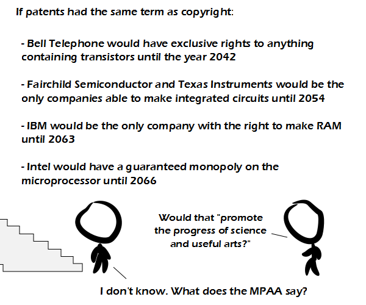

Comic JK 866
When I Feel Like It
⇤
<
?
>
⇥

⇤
<
?
>
⇥
Forum
.
RSS
.
Digg
.
Facebook
.
Reddit
.
Twitter
.
Stumbleupon
Enter your thoughts on number 866 here. Please, no spamming, trolling, or phreaking. This is awesome! >? >>That's "+1" but in English. I've often thought about this... by modern standards, Shakespeare was a plagiarizer. But back then, it was normal (if not desirable) for people to retell existing stories and try to improve upon them. I understand the value of having a work copyrighted for a period of time so that an author can make money off of it, but when the copyrights start extending well beyond an authors lifetime, that just gets plain silly. >The first part of the post makes me think of The Smith's "Cemetry Gates". >except none of the latter products would exist if they couldn't use transistors. >>+1 This isn't quite true, because companies can (and generally do) sell rights to use patented tech. It means that patent-holding companies would have better control of the market, not that they would have exclusive rights of production. >So IBM could inflate the cost of RAM as much as it wanted, and today you'd be paying $2,000 for 512MiB. While I agree that copyright terms are absurdly long (thank you Disney), you have to admit there is a fundamental difference between works and inventions. If I write a really amazing book and don't let anyone else copy it, ever, the world is no worse than before (it's basically impossible that anyone else would have written the same thing). However, if I invent transistors and don't let anyone use them, I fucked technological progress. > It's not just identical copies, it's also reuse; right-holders are claiming copyright and/or trademarks on characters and adaptations, which are the basic mechanism from which culture evolves. Fan culture still exists, and the marketeers of large franchises understand it, but the vidders that don't self-host still have to cope with takedowns and such. Can you say STRAW MAN??? Seriously, I agree that copyright laws are a joke, but this is a very horrible straw man that demonstrates nothing at all. > The straw man in LOZ: Majora's Mask doesn't demonstrate anything either, he just dances. This pretty much IS the way patent law is becoming these days, what with apple trying (and just barely failing) to patent "touch screen" and they weren't even the first to use one. >>ls >>> your_mother.c your_sister.c my_dick.c README.txt configure.sh Makefile >>>> sudo -i; less README.txt; ./configure.sh && make && make install Some decent discussion in here? I almost thought that I'd simply imagined that it was possible. Let's keep it up. > It only seems that way because your mother is sensitive and pro-censorship and keeps deleting comments she finds offensive.